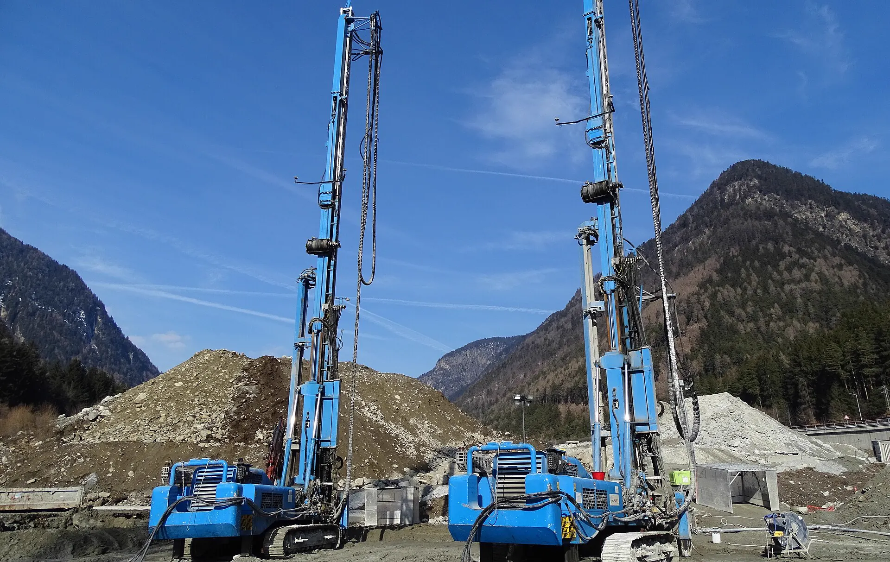
Ground engineering across India
We stabilise slopes, grout voids, support tunnels and strengthen foundations for highways, railways, mines and dams. Twelve methods, each set to the site’s geology.
Twelve ground interventions in four groups
Each group covers one kind of ground work. Point at a group to see it on site.
- Ground and foundations
Ground improvement, foundation strengthening and mine dump stabilisation.
A1 to A3 - Grouting systems
Pressure grouting, microfine cement grouting, PU and resin injection.
B1 to B3 - Slopes and excavation
Slope stabilisation, soil nailing and anchors, excavation support.
C1 to C3 - Specialty and underground
Tunnel support, seepage control and emergency risk mitigation.
D1 to D3
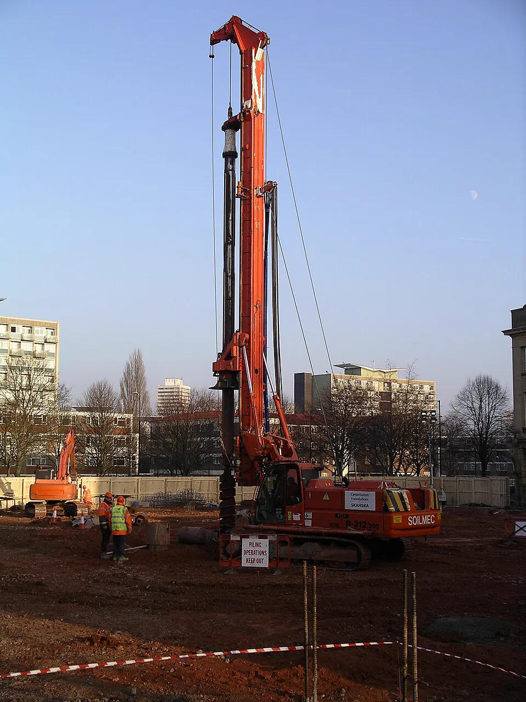
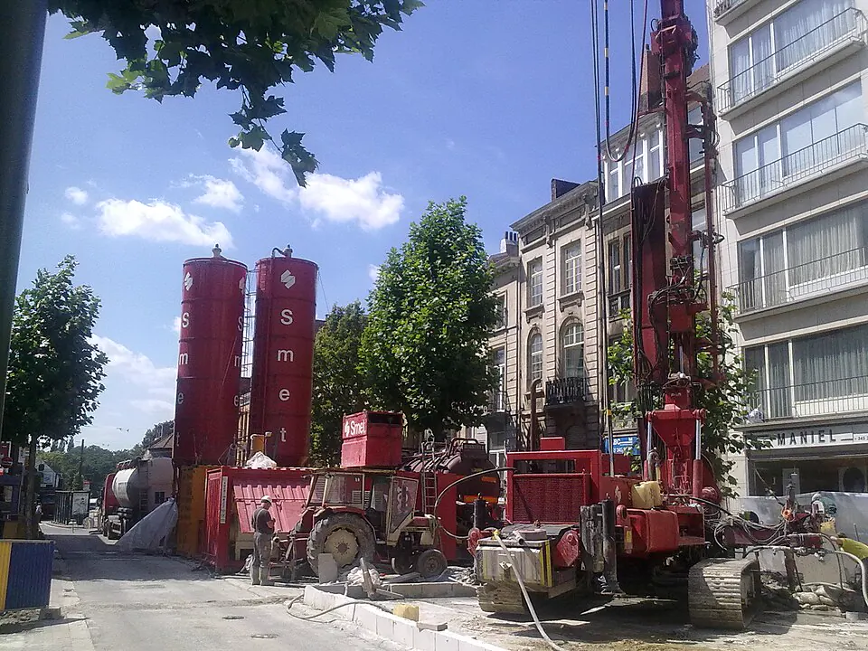
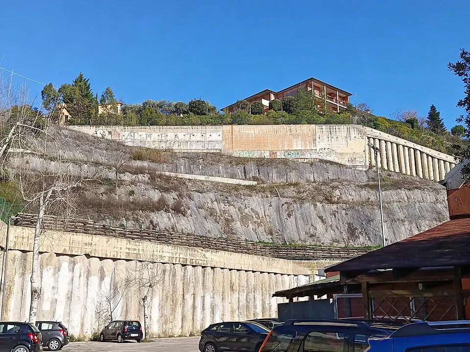
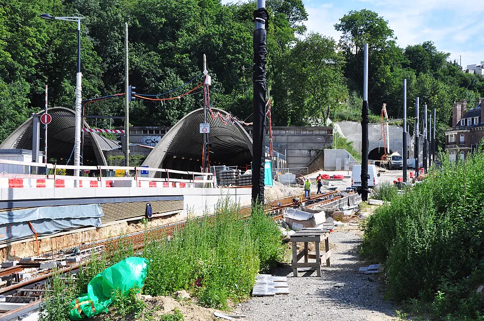
Our method on difficult ground
Technical maturity, rapid mobilisation and custom engineering add up to work that holds.
-
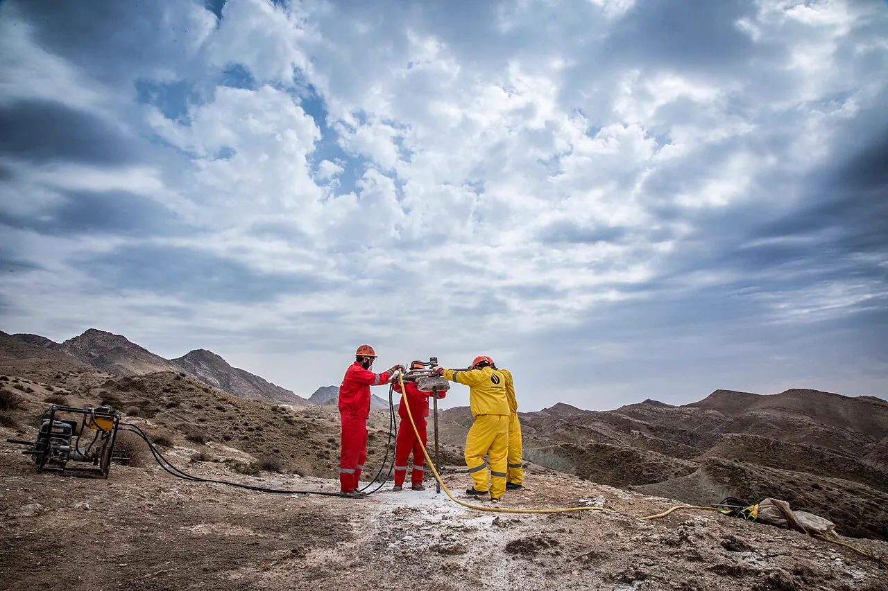
Read the ground before the method
A team with long experience in complex stabilisation studies the geology, access and safety limits of each site.
-
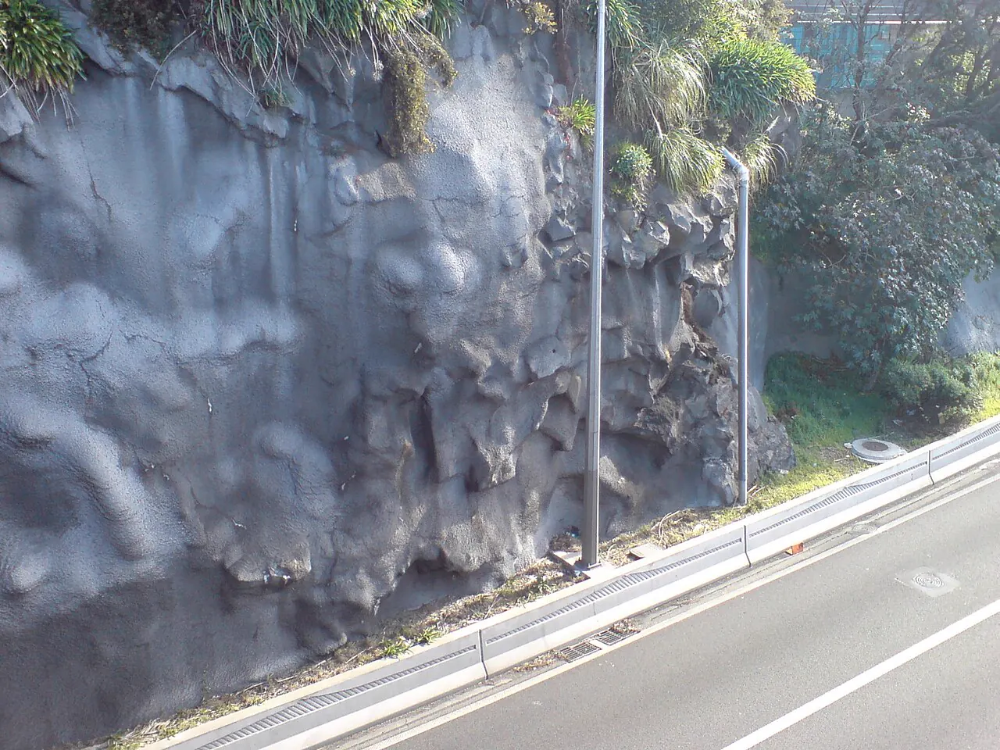
Design a method for this site
No standard templates. Each intervention is engineered and value-engineered for the condition in front of us.
-
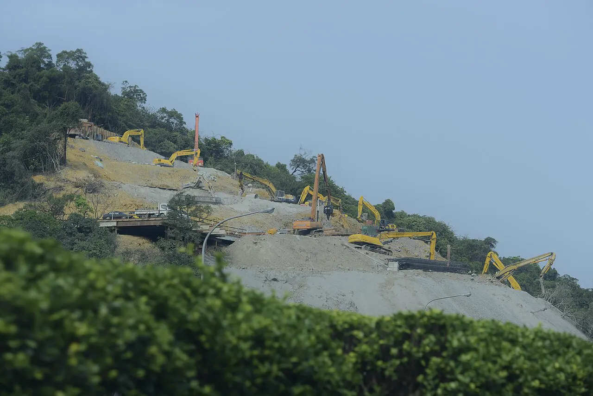
Mobilise to remote and high-risk zones
Crews and rigs reach urban, hilly, remote and mining sites anywhere in India at short notice.
-
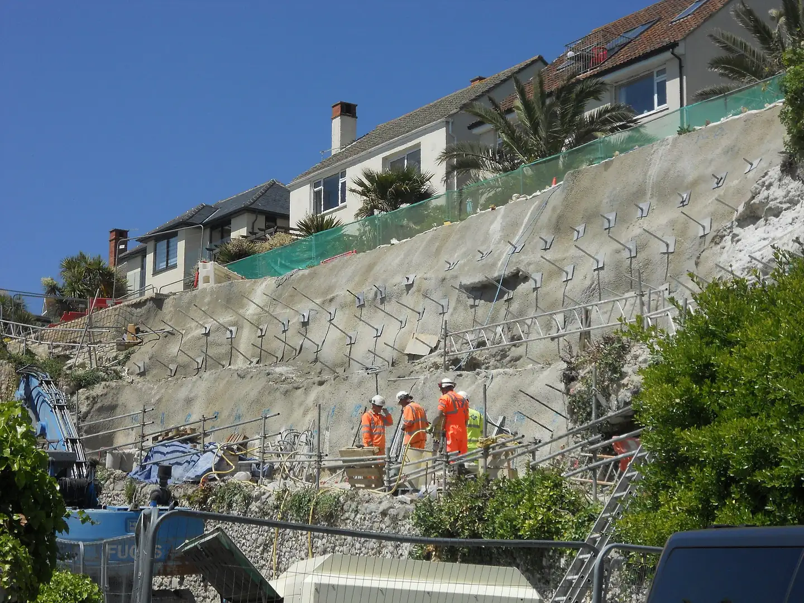
Execute safety first
Method-led site work, checked stage by stage, from the first anchor to the last metre of wall.
Eight ground problems and the work that fixes each
- Slope failureSlope stabilisation, anchors
- Water ingressGrouting, seepage control
- Tunnel distressTunnel support, grouting
- Underground voidsPressure, microfine grouting
- SettlementGround improvement
- Mine dump instabilityMine dump stabilisation
- Foundation distressFoundation strengthening
- Weak groundGround improvement
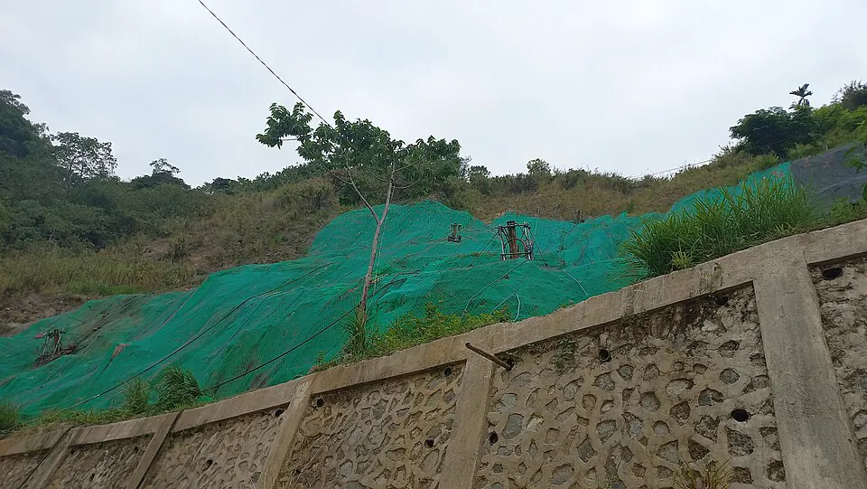
Work across six infrastructure sectors
Urban, remote, hilly, mining and high-risk zones, in every part of India.
- Highways and expressways
- Railways and metro
- Tunnels and underground
- Mining and dams
- Industrial infrastructure
- Urban developments
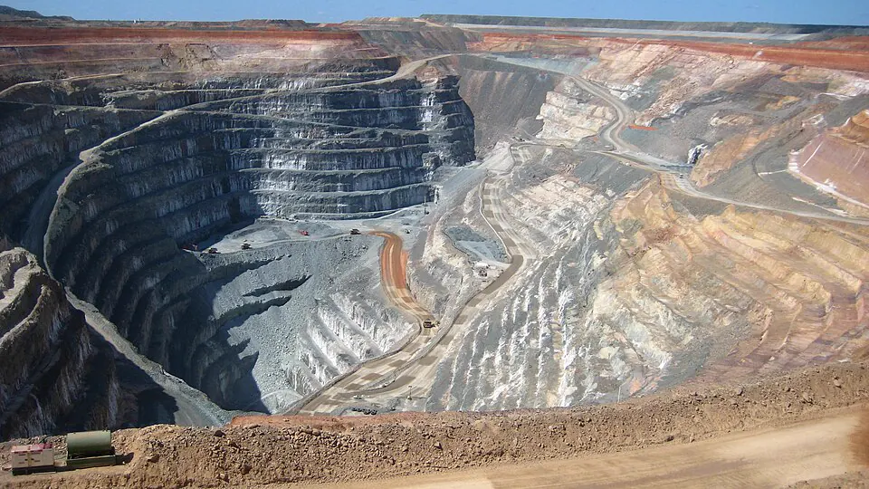
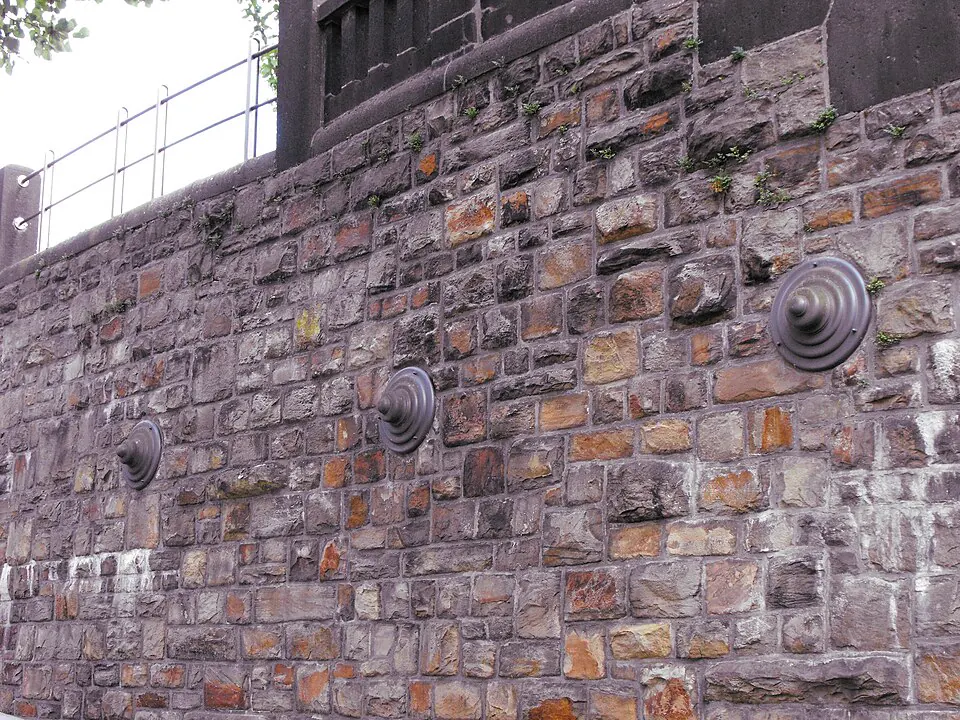
Contact for project enquiries
Tell us where the site is, what the ground is doing and when the work has to start. Replies come by email.
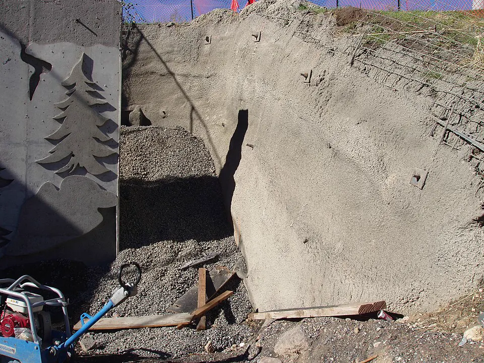